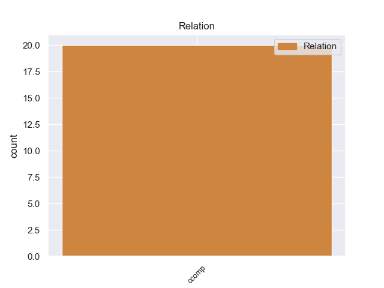
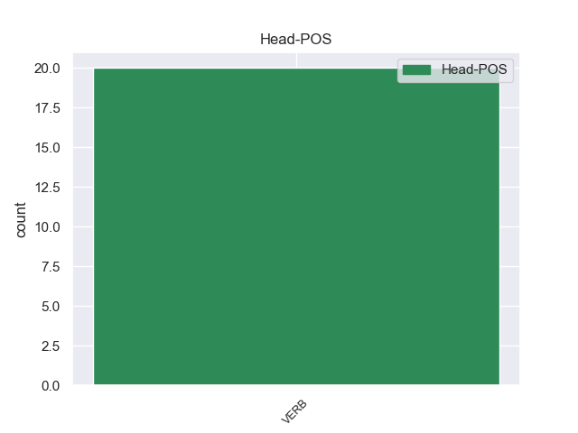
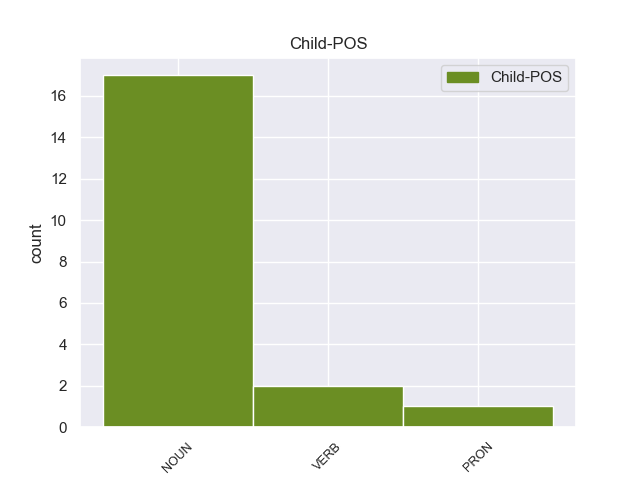

Distribution of features within this leaf



Morphosyntax Rules sorted by frequency.
- When the dependent token is the clausal complement(ccomp) of the head token, and the head token is VERB and the dependent token is NOUN, the Case needs to be Nom.
1 Κύριε _ _ _ _ 0 _ _ _
2 Ύπατε _ _ _ _ 0 _ _ _
3 Εκπρόσωπε _ _ _ _ 0 _ _ _
4 , _ _ _ _ 0 _ _ _
5 επισημάνατε επισημαίνω VERB VERB Aspect=Imp|Mood=Ind|Number=Plur|Person=2|Tense=Past|VerbForm=Fin|Voice=Act 0 _ _ _
6 σήμερα _ _ _ _ 0 _ _ _
7 , _ _ _ _ 0 _ _ _
8 ότι _ _ _ _ 0 _ _ _
9 αυτά _ _ _ _ 0 _ _ _
10 που _ _ _ _ 0 _ _ _
11 γίνονται _ _ _ _ 0 _ _ _
12 εκεί _ _ _ _ 0 _ _ _
13 δεν _ _ _ _ 0 _ _ _
14 είναι _ _ _ _ 0 _ _ _
15 ειρηνευτικές _ _ _ _ 0 _ _ _
16 διαδικασίες διαδικασία NOUN NOUN Case=Nom|Gender=Fem|Number=Plur 5 ccomp _ _
17 και _ _ _ _ 0 _ _ _
18 σας _ _ _ _ 0 _ _ _
19 δίνω _ _ _ _ 0 _ _ _
20 απόλυτο _ _ _ _ 0 _ _ _
21 δίκιο _ _ _ _ 0 _ _ _
22 . _ _ _ _ 0 _ _ _
1 Φυσικά _ _ _ _ 0 _ _ _
2 , _ _ _ _ 0 _ _ _
3 η _ _ _ _ 0 _ _ _
4 Επιτροπή _ _ _ _ 0 _ _ _
5 χάρηκε _ _ _ _ 0 _ _ _
6 διαβάζοντας διαβάζω VERB VERB Aspect=Imp|VerbForm=Conv|Voice=Act 0 _ _ _
7 σ _ _ _ _ 0 _ _ _
8 την _ _ _ _ 0 _ _ _
9 έκθεση _ _ _ _ 0 _ _ _
10 παρακολούθησης _ _ _ _ 0 _ _ _
11 ότι _ _ _ _ 0 _ _ _
12 είσαστε _ _ _ _ 0 _ _ _
13 ικανοποιημένοι ικανοποιώ VERB VERB Aspect=Perf|Case=Nom|Gender=Masc|Number=Plur|VerbForm=Part|Voice=Pass 6 ccomp _ _
14 που _ _ _ _ 0 _ _ _
15 λάβατε _ _ _ _ 0 _ _ _
16 όλα _ _ _ _ 0 _ _ _
17 τα _ _ _ _ 0 _ _ _
18 έγγραφα _ _ _ _ 0 _ _ _
19 τα _ _ _ _ 0 _ _ _
20 οποία _ _ _ _ 0 _ _ _
21 είχατε _ _ _ _ 0 _ _ _
22 ζητήσει _ _ _ _ 0 _ _ _
23 για _ _ _ _ 0 _ _ _
24 τη _ _ _ _ 0 _ _ _
25 χορήγηση _ _ _ _ 0 _ _ _
26 απαλλαγής _ _ _ _ 0 _ _ _
27 . _ _ _ _ 0 _ _ _
1 Ωστόσο _ _ _ _ 0 _ _ _
2 ο _ _ _ _ 0 _ _ _
3 ρυθμός _ _ _ _ 0 _ _ _
4 των _ _ _ _ 0 _ _ _
5 εργασιών _ _ _ _ 0 _ _ _
6 - _ _ _ _ 0 _ _ _
7 και _ _ _ _ 0 _ _ _
8 ως _ _ _ _ 0 _ _ _
9 προς _ _ _ _ 0 _ _ _
10 το _ _ _ _ 0 _ _ _
11 ζήτημα _ _ _ _ 0 _ _ _
12 της _ _ _ _ 0 _ _ _
13 συχνότητας _ _ _ _ 0 _ _ _
14 των _ _ _ _ 0 _ _ _
15 συναντήσεων _ _ _ _ 0 _ _ _
16 της _ _ _ _ 0 _ _ _
17 συντακτικής _ _ _ _ 0 _ _ _
18 συνέλευσης _ _ _ _ 0 _ _ _
19 - _ _ _ _ 0 _ _ _
20 πρέπει _ _ _ _ 0 _ _ _
21 να _ _ _ _ 0 _ _ _
22 διασφαλίζει διασφαλίζω VERB VERB Aspect=Imp|Mood=Ind|Number=Sing|Person=3|Tense=Pres|VerbForm=Fin|Voice=Act 0 _ _ _
23 ότι _ _ _ _ 0 _ _ _
24 η _ _ _ _ 0 _ _ _
25 συνέλευση _ _ _ _ 0 _ _ _
26 είναι _ _ _ _ 0 _ _ _
27 εκείνη εκείνος PRON PRON Case=Nom|Gender=Fem|Number=Sing|Person=3|PronType=Dem 22 ccomp _ _
28 που _ _ _ _ 0 _ _ _
29 διεξάγει _ _ _ _ 0 _ _ _
30 τη _ _ _ _ 0 _ _ _
31 συζήτηση _ _ _ _ 0 _ _ _
32 για _ _ _ _ 0 _ _ _
33 το _ _ _ _ 0 _ _ _
34 μέλλον _ _ _ _ 0 _ _ _
35 της _ _ _ _ 0 _ _ _
36 Ευρώπης _ _ _ _ 0 _ _ _
37 . _ _ _ _ 0 _ _ _
non-conforming Examples:
1 Ο _ _ _ _ 0 _ _ _
2 σεισμός _ _ _ _ 0 _ _ _
3 ήταν _ _ _ _ 0 _ _ _
4 καταστροφικός _ _ _ _ 0 _ _ _
5 αφού _ _ _ _ 0 _ _ _
6 μετρήθηκε μετρώ VERB VERB Aspect=Perf|Mood=Ind|Number=Sing|Person=3|Tense=Past|VerbForm=Fin|Voice=Act 0 _ _ _
7 ότι _ _ _ _ 0 _ _ _
8 ήταν _ _ _ _ 0 _ _ _
9 8-9 _ _ _ _ 0 _ _ _
10 βαθμών βαθμός NOUN NOUN Case=Gen|Gender=Masc|Number=Plur 6 ccomp _ _
11 σ _ _ _ _ 0 _ _ _
12 την _ _ _ _ 0 _ _ _
13 κλίμακα _ _ _ _ 0 _ _ _
14 Μερκάλι _ _ _ _ 0 _ _ _
15 , _ _ _ _ 0 _ _ _
16 και _ _ _ _ 0 _ _ _
17 διήρκεσε _ _ _ _ 0 _ _ _
18 τουλάχιστον _ _ _ _ 0 _ _ _
19 40 _ _ _ _ 0 _ _ _
20 δευτερόλεπτα _ _ _ _ 0 _ _ _
21 . _ _ _ _ 0 _ _ _
1 Εν _ _ _ _ 0 _ _ _
2 πάση _ _ _ _ 0 _ _ _
3 περιπτώσει _ _ _ _ 0 _ _ _
4 , _ _ _ _ 0 _ _ _
5 κύριε _ _ _ _ 0 _ _ _
6 Πρόεδρε _ _ _ _ 0 _ _ _
7 , _ _ _ _ 0 _ _ _
8 προσωπικά _ _ _ _ 0 _ _ _
9 πιστεύω πιστεύω VERB VERB Aspect=Imp|Mood=Ind|Number=Sing|Person=1|Tense=Pres|VerbForm=Fin|Voice=Act 0 _ _ _
10 ότι _ _ _ _ 0 _ _ _
11 μία _ _ _ _ 0 _ _ _
12 μεγάλη _ _ _ _ 0 _ _ _
13 πλειοψηφία _ _ _ _ 0 _ _ _
14 του _ _ _ _ 0 _ _ _
15 Σώματος _ _ _ _ 0 _ _ _
16 είναι _ _ _ _ 0 _ _ _
17 υπέρ _ _ _ _ 0 _ _ _
18 μιας _ _ _ _ 0 _ _ _
19 συνταγματοποίησης συνταγματοποίηση NOUN NOUN Case=Gen|Gender=Fem|Number=Sing 9 ccomp _ _
20 της _ _ _ _ 0 _ _ _
21 διαδικασίας _ _ _ _ 0 _ _ _
22 , _ _ _ _ 0 _ _ _
23 υπέρ _ _ _ _ 0 _ _ _
24 μιας _ _ _ _ 0 _ _ _
25 Ομοσπονδίας _ _ _ _ 0 _ _ _
26 κρατών _ _ _ _ 0 _ _ _
27 και _ _ _ _ 0 _ _ _
28 πολιτών _ _ _ _ 0 _ _ _
29 . _ _ _ _ 0 _ _ _
1 Κυρίες _ _ _ _ 0 _ _ _
2 και _ _ _ _ 0 _ _ _
3 κύριοι _ _ _ _ 0 _ _ _
4 , _ _ _ _ 0 _ _ _
5 δεν _ _ _ _ 0 _ _ _
6 αντιλαμβανόμαστε _ _ _ _ 0 _ _ _
7 τη _ _ _ _ 0 _ _ _
8 Συνέλευση _ _ _ _ 0 _ _ _
9 ως _ _ _ _ 0 _ _ _
10 μια _ _ _ _ 0 _ _ _
11 μάχη _ _ _ _ 0 _ _ _
12 μεταξύ _ _ _ _ 0 _ _ _
13 κομμάτων _ _ _ _ 0 _ _ _
14 και _ _ _ _ 0 _ _ _
15 εδώ _ _ _ _ 0 _ _ _
16 πρέπει _ _ _ _ 0 _ _ _
17 να _ _ _ _ 0 _ _ _
18 επισημάνω _ _ _ _ 0 _ _ _
19 ότι _ _ _ _ 0 _ _ _
20 ο _ _ _ _ 0 _ _ _
21 κ. _ _ _ _ 0 _ _ _
22 Berlusconi _ _ _ _ 0 _ _ _
23 , _ _ _ _ 0 _ _ _
24 σ _ _ _ _ 0 _ _ _
25 τη _ _ _ _ 0 _ _ _
26 " _ _ _ _ 0 _ _ _
27 Le _ _ _ _ 0 _ _ _
28 Monde _ _ _ _ 0 _ _ _
29 " _ _ _ _ 0 _ _ _
30 της _ _ _ _ 0 _ _ _
31 12ης_Ιανουαρίου _ _ _ _ 0 _ _ _
32 , _ _ _ _ 0 _ _ _
33 είπε λέγω VERB VERB Aspect=Perf|Mood=Ind|Number=Sing|Person=3|Tense=Past|VerbForm=Fin|Voice=Act 0 _ _ _
34 ότι _ _ _ _ 0 _ _ _
35 εμείς _ _ _ _ 0 _ _ _
36 είμαστε _ _ _ _ 0 _ _ _
37 υπέρ _ _ _ _ 0 _ _ _
38 του _ _ _ _ 0 _ _ _
39 συγκεντρωτισμού συγκεντρωτισμός NOUN NOUN Case=Gen|Gender=Masc|Number=Sing 33 ccomp _ _
40 των _ _ _ _ 0 _ _ _
41 πάντων _ _ _ _ 0 _ _ _
42 . _ _ _ _ 0 _ _ _
1 Πρέπει _ _ _ _ 0 _ _ _
2 να _ _ _ _ 0 _ _ _
3 διδαχθούμε _ _ _ _ 0 _ _ _
4 από _ _ _ _ 0 _ _ _
5 τα _ _ _ _ 0 _ _ _
6 λάθη _ _ _ _ 0 _ _ _
7 του _ _ _ _ 0 _ _ _
8 παρελθόντος _ _ _ _ 0 _ _ _
9 και _ _ _ _ 0 _ _ _
10 να _ _ _ _ 0 _ _ _
11 εξασφαλίσουμε _ _ _ _ 0 _ _ _
12 ότι _ _ _ _ 0 _ _ _
13 θα _ _ _ _ 0 _ _ _
14 θεσπίσουμε _ _ _ _ 0 _ _ _
15 τους _ _ _ _ 0 _ _ _
16 κατάλληλους _ _ _ _ 0 _ _ _
17 ελέγχους _ _ _ _ 0 _ _ _
18 και _ _ _ _ 0 _ _ _
19 μηχανισμούς _ _ _ _ 0 _ _ _
20 που _ _ _ _ 0 _ _ _
21 θα _ _ _ _ 0 _ _ _
22 εγγυώνται εγγυώμαι VERB VERB Aspect=Imp|Mood=Ind|Number=Plur|Person=3|Tense=Pres|VerbForm=Fin|Voice=Pass 0 _ _ _
23 ότι _ _ _ _ 0 _ _ _
24 αυτό _ _ _ _ 0 _ _ _
25 που _ _ _ _ 0 _ _ _
26 θα _ _ _ _ 0 _ _ _
27 κληροδοτήσουμε _ _ _ _ 0 _ _ _
28 σ _ _ _ _ 0 _ _ _
29 τις _ _ _ _ 0 _ _ _
30 μελλοντικές _ _ _ _ 0 _ _ _
31 γενιές _ _ _ _ 0 _ _ _
32 θα _ _ _ _ 0 _ _ _
33 είναι _ _ _ _ 0 _ _ _
34 σε _ _ _ _ 0 _ _ _
35 καλύτερη _ _ _ _ 0 _ _ _
36 κατάσταση κατάσταση NOUN NOUN Case=Acc|Gender=Fem|Number=Sing 22 ccomp _ _
37 από _ _ _ _ 0 _ _ _
38 αυτή _ _ _ _ 0 _ _ _
39 σ _ _ _ _ 0 _ _ _
40 την _ _ _ _ 0 _ _ _
41 οποία _ _ _ _ 0 _ _ _
42 το _ _ _ _ 0 _ _ _
43 παραλάβαμε _ _ _ _ 0 _ _ _
44 . _ _ _ _ 0 _ _ _
1 Εκπρόσωπος _ _ _ _ 0 _ _ _
2 της _ _ _ _ 0 _ _ _
3 Αλ _ _ _ _ 0 _ _ _
4 Κάιντα _ _ _ _ 0 _ _ _
5 σ _ _ _ _ 0 _ _ _
6 τη _ _ _ _ 0 _ _ _
7 Μαγκρέμπ _ _ _ _ 0 _ _ _
8 ανέφερε αναφέρω VERB VERB Aspect=Perf|Mood=Ind|Number=Sing|Person=3|Tense=Past|VerbForm=Fin|Voice=Act 0 _ _ _
9 ότι _ _ _ _ 0 _ _ _
10 " _ _ _ _ 0 _ _ _
11 μεταξύ _ _ _ _ 0 _ _ _
12 των _ _ _ _ 0 _ _ _
13 ομήρων όμηρος NOUN NOUN Case=Gen|Gender=Masc|Number=Plur 8 ccomp _ _
14 είναι _ _ _ _ 0 _ _ _
15 και _ _ _ _ 0 _ _ _
16 επτά _ _ _ _ 0 _ _ _
17 Αμερικανοί _ _ _ _ 0 _ _ _
18 , _ _ _ _ 0 _ _ _
19 ενώ _ _ _ _ 0 _ _ _
20 οι _ _ _ _ 0 _ _ _
21 υπόλοιποι _ _ _ _ 0 _ _ _
22 είναι _ _ _ _ 0 _ _ _
23 Βρετανοί _ _ _ _ 0 _ _ _
24 , _ _ _ _ 0 _ _ _
25 Γάλλοι _ _ _ _ 0 _ _ _
26 , _ _ _ _ 0 _ _ _
27 Γιαπωνέζοι _ _ _ _ 0 _ _ _
28 και _ _ _ _ 0 _ _ _
29 Νορβηγοί _ _ _ _ 0 _ _ _
30 " _ _ _ _ 0 _ _ _
31 . _ _ _ _ 0 _ _ _